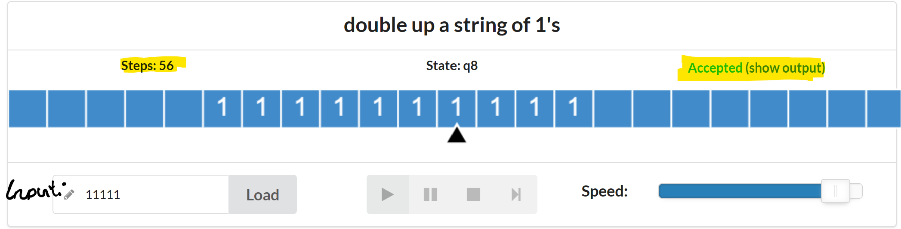

Zettel 01
Aufgabe 3
3.1
- In der VL beschriebe TM ist ein “Transducer”, d.h. ein Automat, das aus einem Input ein Output produziert. Die Beschreibung in der Online-version definiert die TM als ein “Acceptor”. D.h. ein Automat, das fuer eine gegebene Eingabe “Yes” oder “No” produziert. Jedoch kann die Online Version auch als ein Transducer betrieben werden.
- Die online Version erlaubt dem Schreib-/Lesekopf keine Bewegung bei einem Uebergang. Also darf der Kopf auf dem gleichen Feld bleiben. In der VL-version sind dagegen nur die Bewegungen “links” oder “rechts” definiert.
- Die Online-version hat einen “Blank” Symbol, die VL-version hingegen nicht.
3.2
Wie im Online-tutorial erklaert entsprechen die Zustaende der TM dem “Rechenfortschritt” der Berechnung. (Computational Progress).
Bei der “Even number of Zeros”-TM gibt es zwei Zustaende \(q_0\) und \(q_1\):
- \(q_0\) entspricht der Situation, dass bis jetzt eine gerade Anzahl von 0’s gelesen wurde.
- \(q_1\) enptricht der Situation, dass bist gelesene Anzahl von 0’s ungerade ist.
Oder kuerzer:
\[\begin{align*} q_0 &\iff \#0's \equiv 0\mod2 \\ q_1 &\iff \#0's \equiv 1\mod2 \end{align*}\]
Am Anfang der Berechnung ist die Anzahl der gelesenen 0’s gleich 0. Somit ist \(q_0\) der initiale Zustand. Die Uebergaenge sind so definiert, dass das Ablesen einer 0 einen Zustanduebergang \(q_{i} \rightarrow q_{i\oplus 1}\) verursacht, wobei \(i\oplus 1\) Addition mod 2 ist. Hingegen verursacht das Ablesen einer 1 keinen Zustanduebergang: \(q_{i} \rightarrow q_{i}\) D.h. das Ablesen einer 0 ‘flippt’ die Paritaet der 0’s und Ablesen einer 1 hat keinen Einfluss darauf. Der Kopf bewegt sich rechts bis das ‘Blank’ erreicht wird. Falls dann der Zustand \(q_0\) ist, ist ein Uebergang auf \(q_{\text{accept}}\) definiert und die Maschine akzeptiert somit die Eingabe. Sonnst sind keine Uebergange mehr definiert und die Berechnung terminiert in einem nicht-akzeptierenden Zustand.
Siehe Figure 1 und Figure 2 fuer die Uebergangstabelle und den Ubergangsgraph
3.3
In der VL definierte TM enthaelt kein “Blank”-symbol. Stattdessen symbolisiert “0” das Ender einer Zeichenkette von Einsen. Da, in der Online-version es “Blanks” gibt, ersetzten wir 0 durch “Blanks”.
Das Programm zur Verdoppelung einer Einsenkette (Auch im Zip als txt datei enthalten):
// Input: a string of 1's of length n
// Ouput: a string of 1's of length 2n
// Example: if 111 is given as input. The machine terminates at an accepting state
// with 111111 as the string on the band.
//
//
name: double up a string of 1's
init: q1
accept: q8
q1, 1
q2,X,>
q2,_
q3,Y,<
q2,1
q2,1,>
q3,1
q3,1,<
q3,X
q4,1,>
q4,1
q5,X,>
q4,Y
q8,1,>
q5,1
q5,1,>
q5,Y
q6,Y,>
q6,1
q6,1,>
q6,_
q7,1,<
q7,1
q7,1,<
q7,Y
q3,Y,<Wir haben das Program auf die Inputs 1, 11 und 11111 getestet und richtige Ergebnisse erhalten:
